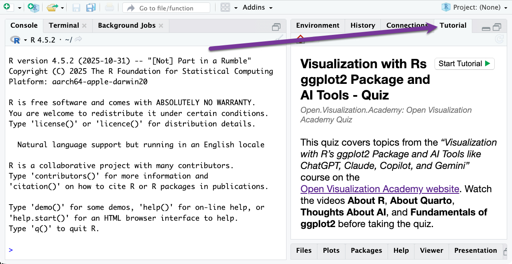
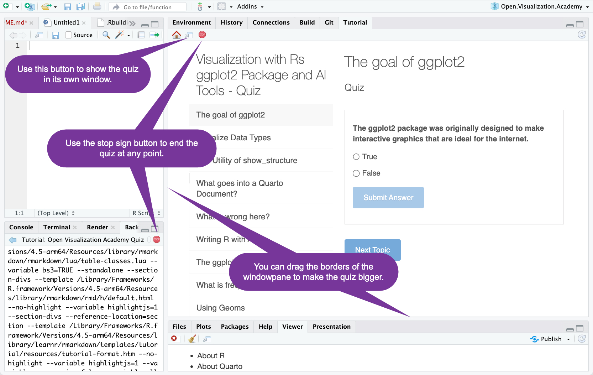
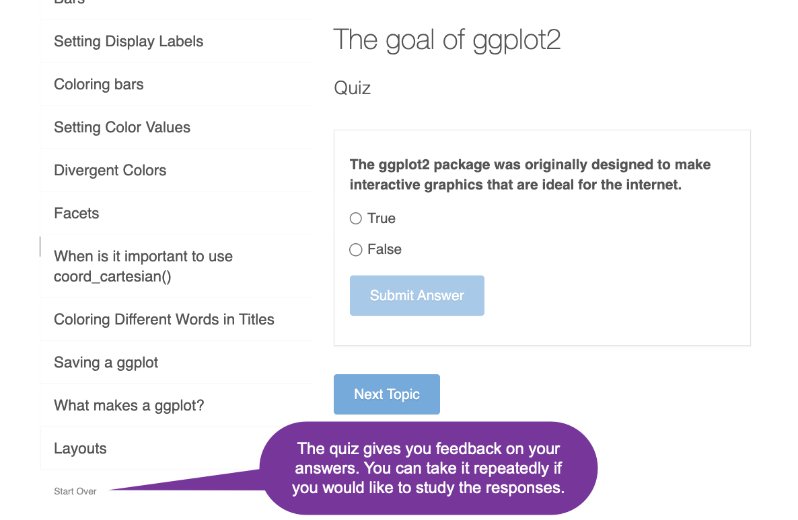

This is a package to support class Visualization with R’s ggplot2 Package and AI Tools like ChatGPT, Claude, Copilot, and Gemini which is part of the Open Visualization Academy project.
To install the package:
# The easiest way to install Open.Visualization.Academy is to run:
install.packages("Open.Visualization.Academy")
# Or you can get the development version from GitHub:
# install.packages("pak")
pak::pak("RaymondBalise/Open.Visualization.Academy")About this Package
The Open.Visualization.Academy package contains:
- A function called
show_structure(), which prints a report describing a dataset. It tries to not print sensitive data. This is useful for when you are working with AI tools like ChatGPT, Claude, Copilot, and Gemini. To learn about it, run this line in the R Console:vignette("show_structure", package = "Open.Visualization.Academy"). - Datasets named
laryngectomyandanalysis. To learn about them, run?laryngectomyor?analysisin the R Console. - A quiz which covers the material in the Open Visualization Academy class called Visualization with R’s ggplot2 Package and AI Tools like ChatGPT, Claude, Copilot, and Gemini.
About the Quiz
The Visualization with R’s ggplot2 Package and AI Tools like ChatGPT, Claude, Copilot, and Gemini course has four sections:
- About R
- About Quarto
- Thoughts about AI
- Fundamentals of ggplot2
Watch all of the videos before trying the quiz included here.
Using the Quiz on Mac
You will need to install a couple packages. Run these two lines using the R console:
install.packages("remotes")
remotes::install_github("rstudio/gradethis")Using the Quiz on Windows
You will need to install some software and a couple packages:
Install Rtools from https://cran.r-project.org/bin/windows/Rtools/rtools45/rtools.html by using the Rtools45 installer if you are using and Intel CPU or if you are using a Microsoft Surface or other ARM CPU, use the 64-bit ARM Rtools45 installer.
Run these two lines using the R console:
install.packages("remotes")
remotes::install_github("rstudio/gradethis")Taking the Quiz
To use the quiz in RStudio, after installing the package, restart RStudio and then look in the Tutorial pane:

If you are working on a large screen, you can resize the quiz:

If you scroll to the bottom of the question list, you can start over.

If you are not working in RStudio, you can access the quiz by running this:
learnr::run_tutorial("Open Visualization Academy Quiz", "Open.Visualization.Academy")